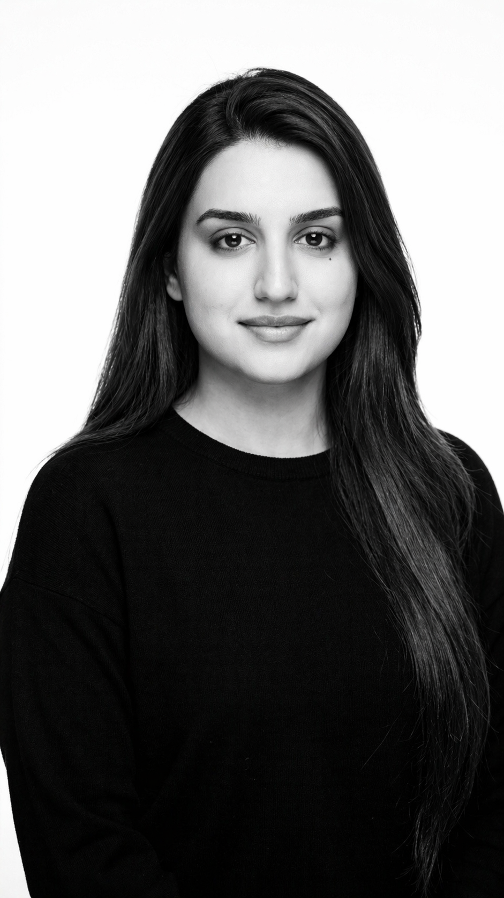

Hi, I'm Huma.
I'm a machine learning engineer and researcher with 5 years of experience building AI systems that work in the real world. I've finished my M.S. in Data Science at Duke, and my work lives at the intersection of large language and vision-language models, autonomous systems, and AI safety and evaluation.
Recently, I worked on a calibrated VLM-as-a-judge framework for evaluating autonomous-driving video, a digital-twin simulation model for ICU patients, and a symbolic reward-model pipeline for verifiable reasoning. Before Duke, I spent years shipping production ML across healthcare, energy, and mobility, computer vision on edge hardware, forecasting systems, and LLM-powered tooling. I hold two provisional patents in ML-based health monitoring and have written ML explainers that have passed 102k views. I write about science and tech to give back to the community that taught me most of what I know.
When I'm not building models, you'll find me painting landscapes and portraits, deep in a Formula 1 race, or cooking something in the kitchen. I especially love Kashmiri, Italian, Thai, and Mughlai cuisine, along with dishes from Yemeni, Jordanian, and Persian cuisines.
Fun fact: I can solve a sudoku puzzle in under 2 minutes ⏱️
From research prototypes to production systems
MambaTwin: Built a 1.5M-parameter digital-twin simulation platform on a Mamba backbone, trained on 17,133 MIMIC-IV ICU patients. R² > 0.90 on 3 biomarkers, calibrated 95% intervals (ECE 0.040), zero-shot cross-institution transfer to 214 Emory ICU patients (avg R² = 0.810).
PolicyReasoner: Built a symbolic Process Reward Model scoring reasoning steps against a time-varying agricultural policy ontology over 80K USDA grants. DPO-trained Qwen-2.5-7B and Llama-3.1-8B. Matched GPT-4o F1 at lower inference cost, first symbolic-PRM Constitutional-AI pipeline for safety-critical post-training.
Deployed YOLOv8 perception model for real-time vehicle inspection, reducing manual QA by 80% across 10,000+ daily images. Boosted license-plate OCR accuracy from 60% to 90%.
Built LangChain + GPT-3.5 LLM agent for digital-blueprinting (900% efficiency gain). Productionized EV-range forecasting improving planning accuracy by 20%. Built anomaly detection for battery telemetry.
Built dynamic-pricing ML system for RV rentals (+30% revenue, +25% bookings). Developed optimization models for aircraft load planning and ML-driven carbon-emissions prediction.
Built Gaussian Process models for solar-irradiance forecasting, improving grid efficiency by 15%. Led national renewable-integration energy-modeling project for the Ladakh region.
Calibrated VLM-as-a-Judge framework for autonomous-driving video release gates on Wayve LingoQA. 7-source perturbation cascade, Tweedie posterior-mean denoiser, ordinal split-conformal intervals across 28,400 judge runs on Claude, Qwen2.5-VL-7B, and InternVL2-8B (vLLM on L40S/H100). Behavior taxonomy mapped to NHTSA pre-crash and ASAM OpenSCENARIO 1.x. Showed metric choice flips the AV release winner: grounded VLM judge hits κ = 0.837, fail-F1 = 0.712 at ~38× cheaper than text-only. Ships NVILA-8B + NVIDIA NIM deployment recipe.
Safety-first cache router for RAG serving stacks. 4-gate evidence-validated router (query similarity, evidence Jaccard, source-version, lexical support) sitting above vLLM Automatic Prefix Caching. Evaluated across 12,000 real-LLM generations on HotpotQA and mtRAG, reduced unsafe-served rate from 15–51% (naive) to 0.0–1.5% (34× reduction) at 1.04–1.07× no-cache latency. Introduced operator-facing safety metric (USR); paper submitted to arXiv.
1.5M-parameter patient-specific digital-twin on Mamba backbone for calibrated forward simulation, treatment-conditioned counterfactual rollout via G-computation, and frozen-backbone risk prediction. 4-architecture comparison (Mamba vs GRU-D, LSTM, Transformer); zero-shot Emory transfer avg R² = 0.810, the only model whose accuracy improved under distribution shift.
Mechanistic interpretability of a toy transformer. Reproduced OpenAI's SAE pipeline (Scaling and Evaluating Sparse Autoencoders, 2024; Weight-Sparse Transformers Have Interpretable Circuits, 2025) on a transformer trained on a first-token / last-token equality task. Traced a single-head copy-and-compare circuit where the final position attends back to the first position via helper tokens; UMAP confirms the SAE sharpens equality-vs-inequality clusters.
Explainable multimodal LLM system (text + audio) with client-side RAG, embedding-based attribution, alignment scoring, and per-response decision traces for transparent, personality-conditioned generation in emotionally sensitive contexts. Emphasizes interpretability, attribution, and refusal-aware behavior shaping for safety-critical conversational AI.
GenAI healthcare data platform with end-to-end Databricks + Pandas ETL pipeline for ingestion, normalization, deduplication, and validation of multi-source clinical records feeding a RAG system. Fine-tuned GPT-2 + LoRA achieving perplexity 3.32 (outperforming Med-PaLM on internal eval). Shipped via Docker + AWS App Runner with CI/CD, scaling to 10,000 concurrent users.
End-to-end sensor simulation → perception → evaluation loop. Built a fake depth/lidar sensor in PyBullet with realistic failure modes (distance noise, glass dropout, ghost reflections, quantization), projected into bird's-eye-view maps, then swept noise to measure exactly where perception breaks. Trained TinyBEVNet CNN denoiser that roughly triples overlap with ground truth. Runs on a laptop CPU in ~25 seconds.
LLM-powered course planner & recommendation tool using SciBERT + GPT-3.5 + embedding-based dual-stage reranking integrated with Duke APIs and calendar tools. Mimics user preference drift, calendar alignment, and availability, useful for AGI-style task generalization.
Built an LSTM-based model for ECG anomaly detection achieving AUC of 0.93, using statistical features and filtering to classify abnormal heart signals. Featured tutorial article on Analytics Vidhya.
My articles on Towards Data Science, Medium, and Analytics Vidhya have collectively reached 102k readers.
Featured author writing on LLM evaluation, VLM-as-a-Judge methodology, RAG safety, and applied machine learning research.
Anomaly Detection in ECG Signals, identifying abnormal heart patterns using deep learning. A practical walkthrough of LSTM-based time-series classification on medical signals.
Long-form technical writing on machine learning, generative AI, and research walk-throughs, from foundational concepts to practical deployment patterns.
At my core, I'm driven by a love for mathematics, patterns, and understanding complex systems, which is what drew me to AI and machine learning. But that same fascination with patterns shows up everywhere in my life.
I love cooking Kashmiri (Wazwan), Italian, Thai, and Mughlai cuisine, with a special soft spot for Yemeni, Jordanian, and Persian dishes. There's a beautiful math to flavor balancing.
Deep in a Formula 1 race on weekends, the engineering, telemetry, and split-second decision-making is basically real-time optimization theater.
Portraits and landscapes are my medium. I find the interplay of light, perspective, and color deeply mathematical.
Inspired by nature and the hidden mathematics within it, Fibonacci spirals, fractal branching, flocking algorithms. Birds are living proof that elegance and efficiency coexist.
Fashion is pattern recognition in another form, texture, symmetry, cultural signal processing. I love how design systems mirror computational thinking.
From sudoku to complex systems, I'm endlessly drawn to the hidden structures that govern our world. Math is the language I think in.
Teaching Assistant for NLP & Design Technology Core II. Branding & Digital Media Head at Quantitative Finance and Analytics Club.
Final project: Wearable SPAD-sensor obstacle-detection device for the visually impaired.
Built across research, healthcare, energy, mobility, and ML infrastructure